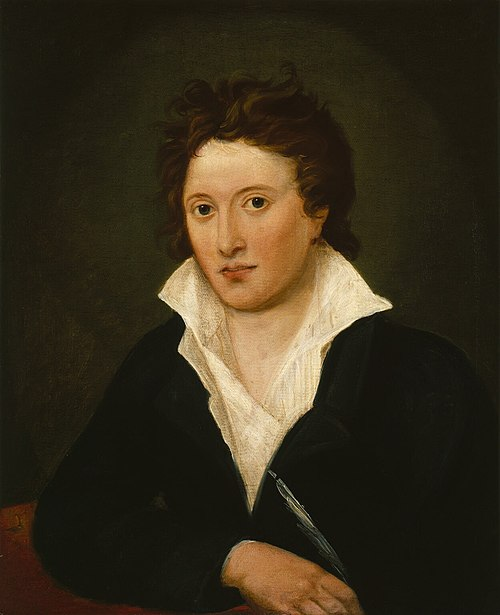
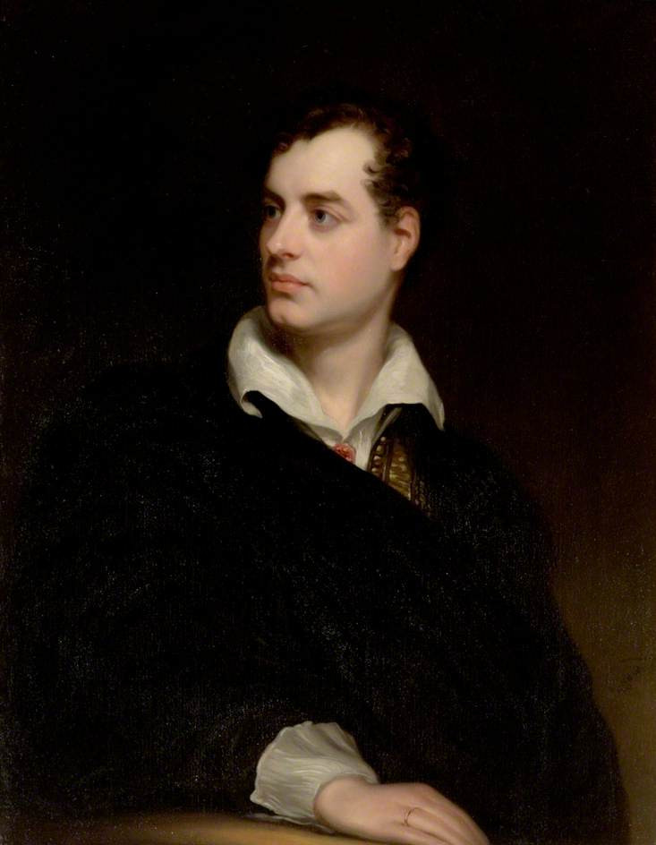
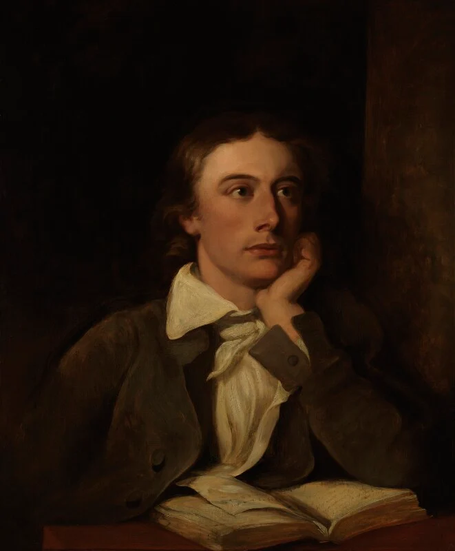

The Sublime is the feeling of fear and wonder when facing something uncontrollable.
Storms, oceans and winds show how small human beings are.
For Shelley, the West Wind represents this overwhelming power.

Percy Bysshe Shelley

Lord Byron

John Keats
Shelley belonged to the second generation of Romantic poets, together with Byron and Keats. They were deeply involved in political and social change.
Shelley believed in freedom, equality, and the power of ideas to transform society.
The West Wind is both a destroyer and a preserver. It drives away dead leaves, but also carries seeds that will grow in spring.
It represents change — the end of one cycle and the beginning of another.
Shelley speaks to the wind as a powerful force of change.
Listen to the poem:
Drive my dead thoughts over the universe
Like withered leaves to quicken a new birth.
Old ideas die like leaves, new ideas grow like seeds.
The wind spreads change across the world.
If Winter comes, can Spring be far behind?
Thanks to our teacher: Prof.ssa Sica
Project by:
Ardia Manuel
Gaeta Gennaro
Salzano Fiorentino
Mabo Temidayo
Voza Raffaele